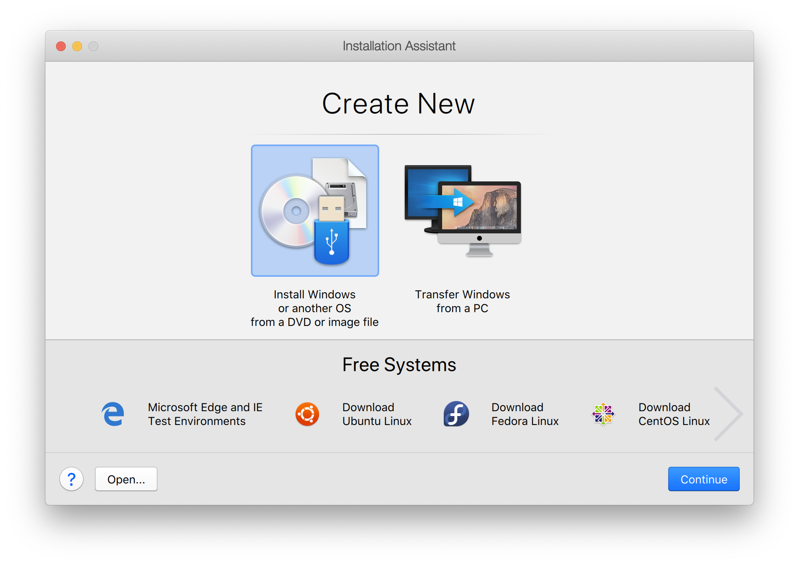
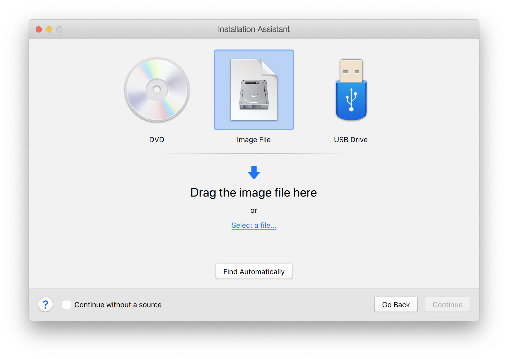
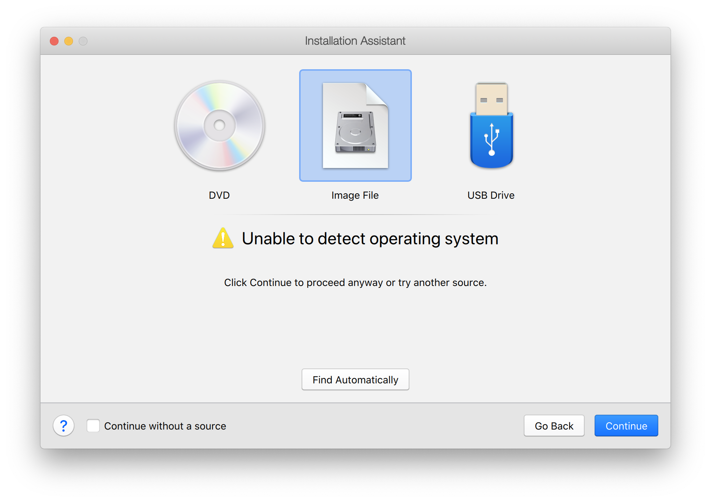
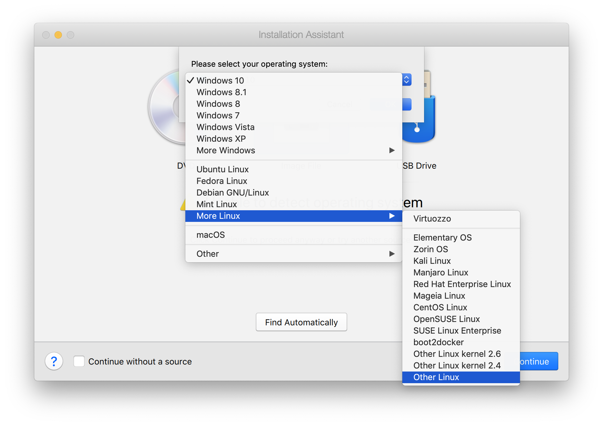
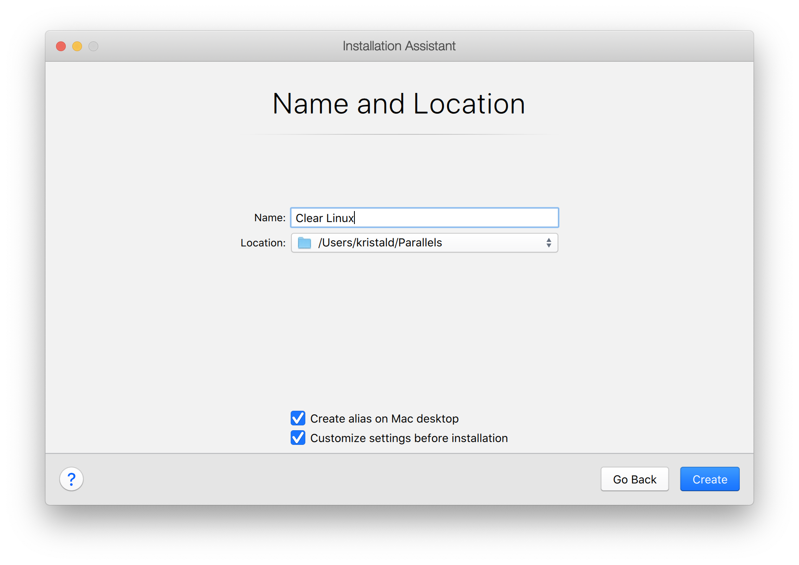
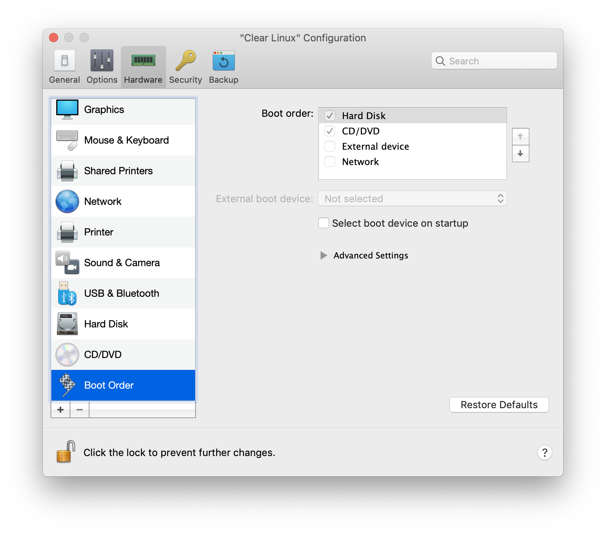
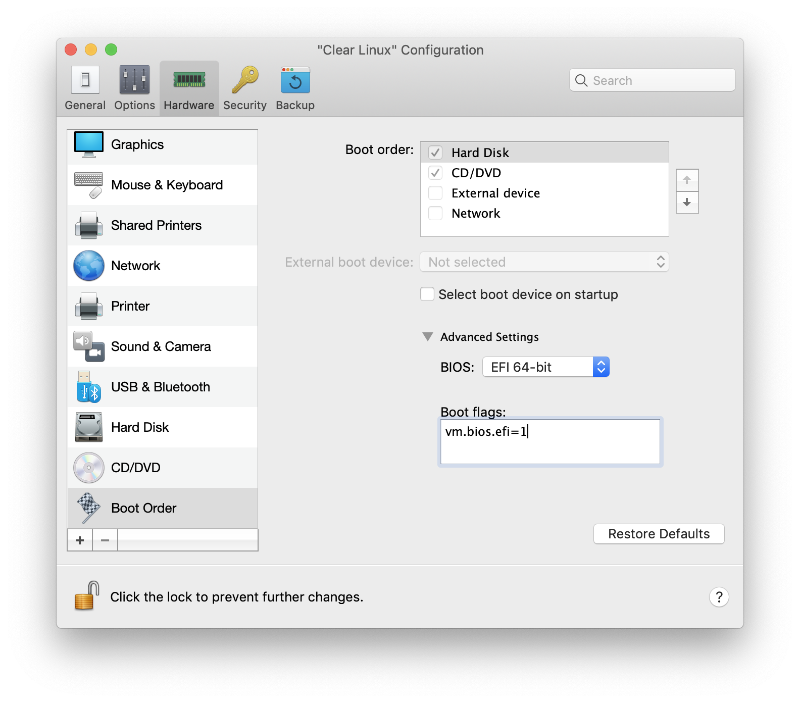
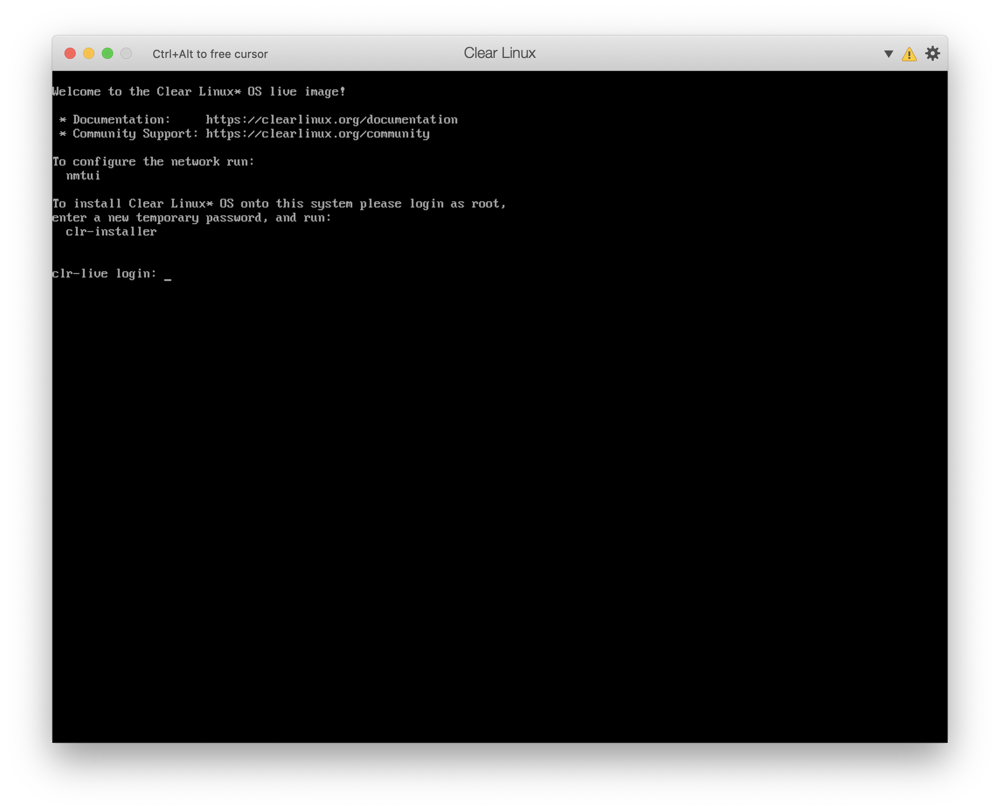
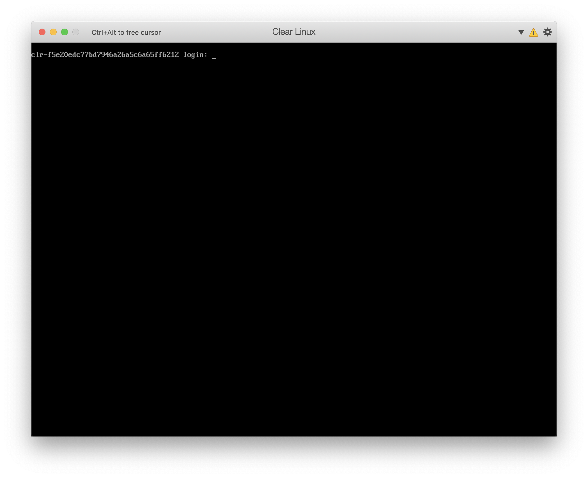

Clear Linux* OS on Parallels* Desktop for Mac*¶
This page explains how to run Clear Linux OS Server in CLI mode as a guest OS in Parallels Desktop 14 for Mac.
Parallels Desktop for Mac is virtualization software that allows other operating systems, such as Linux, to run side-by-side with macOS*.
Prerequisites¶
Install Parallels Desktop 14 for Mac.
Download ISO image¶
Download a live-server ISO installation file from https://clearlinux.org/downloads. This guide uses Clear Linux OS Server 30140 as its example.
Unzip the ISO image with the command:
gunzip clear-30140-live-server.iso.xz
Initialize new VM¶
Start Parallels and initialize your VM with the following steps.
Go to .
In the opening dialog window, select Install Windows or another OS from a DVD or image, then click Continue. (See Figure 1.)
 Figure 1: Parallels opening dialog¶
On the next screen, select Image File, then click Select a file… as shown in Figure 2.
 Figure 2: Dialog to select source for VM¶
Select your ISO file. The system displays the warning message “Unable to detect operating system”, as shown in Figure 3. This message is expected and can be ignored. Click Continue.
 Figure 3: Warning that OS is not detected¶
You are prompted to select your OS, as shown in Figure 4. Select from the drop-down menu and click Continue.
 Figure 4: Select OS from drop-down menu¶
Name your VM and check Customize settings before installation. (See Figure 5.)
 Figure 5: Name and Location screen¶
Click Create. The Configuration window for the new VM opens, as shown in Figure 6.
Select .
 Figure 6: VM Configuration window¶
Expand Advanced Settings. Set BIOS to “EFI 64-bit” and in the Boot flags field, enter “vm.bios.efi=1” as shown in Figure 7.
 Figure 7: Advanced configuration settings¶
Close the Configuration window and click Continue.
If camera and microphone access restriction warnings are displayed, you can ignore them.
Install Clear Linux OS on VM¶
Follow the prompts and install Clear Linux OS using the text-based installer as shown in Figure 8.
Refer to Install Clear Linux* OS from the live server for additional installation instructions.
 Figure 8: On screen instructions from text-based installer¶
After installation, reboot the VM. You are prompted to log in, as shown in Figure 9. Log in with the credentials you used when you installed Clear Linux OS on the VM.
 Figure 9: Log in prompt¶
Congratulations! You have successfully set up a Clear Linux OS VM using Parallels Desktop for Mac.